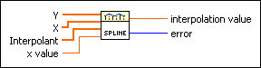

Spline Interpolation VI
Owning Palette: Interpolation & Extrapolation VIs
Requires: Full Development System
Returns a spline interpolated value at x value given the tabulated values (x[i], y[i]) and the second derivatives Interpolant that the VI obtains from the Spline Interpolant VI.

 Add to the block diagram Add to the block diagram |
 Find on the palette Find on the palette |